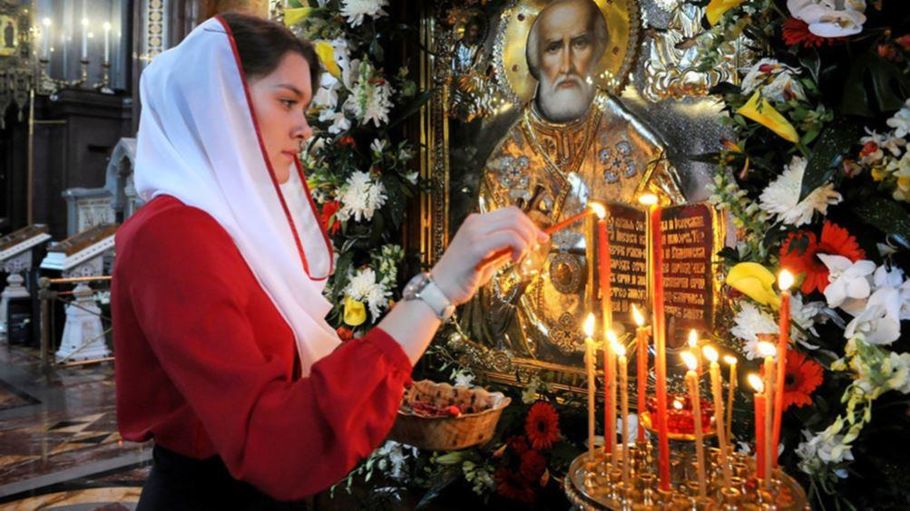
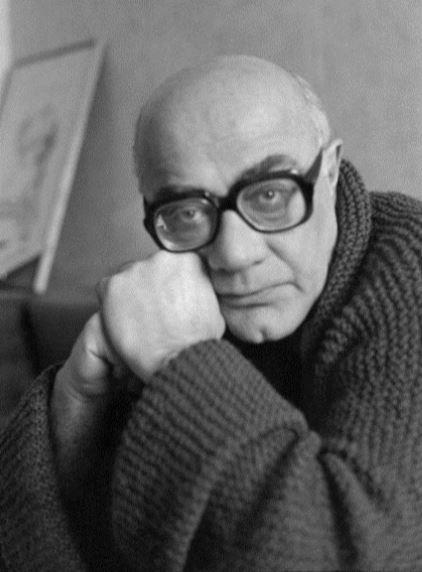
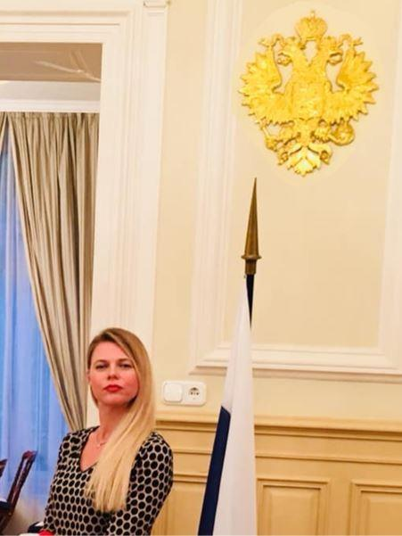

Par cet article, je tâcherai de vous prouver pourquoi l’orthodoxie n’est pas un trait supplémentaire de la Russie mais sa constante indispensable.
I. LA VOIE HISTORIQUE DU PEUPLE RUSSE
Pourquoi je parle du sens. L'Histoire humaine a le sens, tout comme la vie humaine en a un. L'Histoire d'un peuple a donc aussi son sens. Cette question du sens est au cœur de toutes les religions. Les religions sont à l’origine des cultures. Si nous voulons comprendre telle ou telle culture il est impératif d'accourir à l'histoire de sa religion. Sans connaître sa religion nous ne pouvons pas connaître une culture. La religion c'est également la vision du monde et l'identité du peuple. L'orthodoxie est une vision du monde, le catholicisme en est une autre, l'islam - encore une autre etc. Ce sens d'un peuple s'appelle « l'idée nationale ». L'Histoire nous montre qu’uniquement les peuples qui ont la culture très riche et la tradition de réflexions sur leur Histoire nationale et sur le sens de cette Histoire arrivent à survivre à travers des siècles.
Ils peuvent avoir de graves crises sur la courte distance mais à long terme ils sont les plus endurants. Différemment des peuples qui ont perdu toute préoccupation du sens de leur Histoire, de leur identité nationale, de leur culture. Ces peuples essaient de survivre juste pour survivre. Mais survivre pourquoi faire ? S'il n'y a pas de sens. L’avenir s’ordonne et peut s’expliquer comme le passé pour ceux qui connaissent leur Histoire. Et ceux qui la négligent paient généralement très cher pour cette ignorance. La Russie aujourd’hui représente l’exemple de la continuité et de la cohérence historique, autrement dit de la fidélité à son Histoire.
Tout en étant l’idée nationale de la Russie l’orthodoxie est également son identité. « La Russie ne confine qu'avec Dieu », - écrira Rilke dans un de ses récits. Tous les sondages dans l'Histoire russe démontrent la conscience orthodoxe de la Russie. Il ne s'agit pas de savoir si la personne qui se dit orthodoxe va à l’Église ou pas. Il suffit que la personne se définisse comme orthodoxe en parlant de son identité. Tout sociologue vous le dira. Si le citoyen de la Russie se dit orthodoxe il est certain qu'il est au moins sensible aux valeurs et à l'idée de l'orthodoxie. Le plus souvent l'Histoire de la Russie continue à vivre à travers son peuple. Cette continuité historique est ressentie par une grande majorité des Russes. Mais pourquoi le paganisme n'est-il pas devenu la caractéristique principale de l'identité nationale russe ?, - me demanderiez-vous peut-être. La réponse à cette question réside premièrement dans la pluralité du paganisme. Ce n’était pas une croyance mais plusieurs croyances qui ne jouaient bien évidemment pas le rôle unificateur dans le pays. Deuxièmement, le paganisme russe ne peut pas être considéré comme une véritable culture car la Russie n'avait à cette époque ni sa langue, ni les constructions en pierre témoins de la formation culturelle. La culture russe apparait avec le baptême de la Russie au IX siècle sous le Prince Vladimir. C’est à partir de cet événement historique que la Russie est considérée comme une entité culturelle. Nous pouvons donc parler de l'impossibilité de l'alternative pour la Russie. La culture Russe a toujours été et sera toujours orthodoxe, point. Si la Russie cesse d'être orthodoxe elle cesse d'exister. Ce n'est pas le cas des Grecs par exemple. Ils ont eu des centaines de siècles d'une culture païenne conséquente. Elle déterminait leur identité. Même ayant plus tard choisi le christianisme (parce qu'il n'y a pas eu encore de cette division en orthodoxes et catholiques) les Grecs ont toujours eu l'alternative (la variante de secours) du retour à leur culture païenne. Ce qu'ils ont fait à la renaissance par exemple. Quant à la Russie, le chemin de retour dans son passé païen ne lui est pas donnée. La particularité de la Russie relative à son identité orthodoxe nous fait affirmer la permanence de l'orthodoxie en Russie.
L'Histoire de la Russie nous montre bien que la trahison de l'orthodoxie y est exclue. La Russie a toujours été confrontée au choix suivant : rester orthodoxe ou trahir son orthodoxie. Elle a toujours choisi de rester orthodoxe. Aucune crise, aucun changement de régime, aucune autre croyance ou culte – rien n'a jamais pu éradiquer le noyau orthodoxe de la culture russe. Rappelons-nous la période de la domination mongole, les Croisades, Pierre le Grand, Napoléon, et même le régime soviétique et les années 90 aussi étonnant que ce fait ne vous paraisse !
Aujourd’hui, malgré les menaces de l’Occident, la Russie arrive une fois de plus à garder son orthodoxie restant toujours aussi unie et indépendante. Elle continue à assumer sa différence par rapport à l’Occident. De nombreux intellectuels russes parlent même de la civilisation russe. Patriarche Cyrille l'a également répété il n'y a pas longtemps. Le rôle de l'orthodoxie dans l'union et la grandeur de la Russie est donc primordial. Je ne vais pas développer ici la théorie Moscou – Troisième Rome, vous la connaissez tous.
II. LE RÔLE DE L'ORTHODOXIE DANS LA RUSSIE CONTEMPORAINE
Le rôle de l’orthodoxie dans la Russie contemporaine pourrait être étudié en trois axes :
2. 1. Le rôle historique :
La Fédération de Russie est un État laïque. Faisant partie du processus civilisationnel global la Russie ne peut pas se permettre de s’autoproclamer comme État chrétien. Cela n’empêche pas pour autant au Patriarcat de Moscou de jouer un rôle colossal dans la politique intérieure et extérieure russe parce que le pilier de l’orientation conservatrice de Vladimir Poutine c’est bien l’Église. La Russie est un pays historiquement chrétien et cela ne pose aucun problème aux représentants d’autres cultures et d’autres religions présentes sur son territoire. Toutes les confessions et toutes les religions ont le droit de coexister avec l’orthodoxie traditionnelle. Si vous observez bien vous verrez qu’à chaque rencontre de haut niveau le Président Poutine est toujours assis côte à côte non seulement avec le Patriarche pais aussi avec le représentant de l’islam et le représentant des juifs. La Russie est bienveillante envers toute cette diversité ethnique sur ses terres mais sous conditions que toute personne d’identité non orthodoxe ne remet pas en question le rôle historique de l’orthodoxie et respecte le statut privilégié de cette dernière. Le Président de la Russie est le Président non seulement des orthodoxes mais aussi des musulmans etc. Idem pour la diversité des parties politiques. Vous remarquez bien que le parti communiste n’a par exemple jamais été interdit en Russie.
2. 2. Le rôle idéologique :
Chaque État a besoin d’une idéologie, d’une vision du monde propre à cet État. Aujourd’hui, nous avons peur d’utiliser le mot « idéologie » et pourtant il n’y a rien de criminel dans ce concept. Souvenez-vous de l’expression de Mirab Mamardochvilli : « L’idéologie – est la colle pour la société ». Il n’existe pas de société sans idéologie. L’idéologie de la Russie contemporaine est l’orthodoxie. Autrement dit, l’État laïque russe est orthodoxe. Je reformulerai l’expression d’Apolon Grigoriev, homme de lettre russe, qui a dit « Pouchkine c’est notre tout » et je dirai que l’orthodoxie c’est notre tout.
2. 3. Le rôle élévateur :
Nous connaissons les pays qui aiment reprocher à la Russie le retour en arrière au lieu des avancements vers l’avenir en essayant ainsi de décrédibiliser la Russie aux yeux de ceux qui y voit le dernier espoir pour l’Europe. Il suffit de lire les trois (il y en a peut-être déjà quatre) Manifestes humanistes signés par des ultra-progressistes des XX et XXI siècles. La religion y est vue comme le frein principal au progrès. Le retour au christianisme ou la veille sur sa stable présence dans une société ne signifie rien d’autre que le pas d’un pays vers l’avenir, pas en avant vers le progrès de l’Homme dans son aspiration à la perfection. L’essentiel est l’élévation de l’Homme. Vladimir Legoïda, directeur du service public du Patriarcat de Moscou a dit un jour dans un interview : « L’Église change les Hommes et les Hommes changent après leur pays ». La culture orthodoxe russe c’est la culture de la timidité, comme l’appelait Sergueï Averintsev, culture obéissante dans le bon sens de ce terme, culture humble et c’est là sa grande force. Ce n’est pas pour rien que la littérature russe est appelée « sainte littérature ». L’influence de cette dernière sur les esprits et les cœurs est anoblissante. C’est bien l’Église qui donne la direction à la société et protège le système des valeurs sans lesquelles aucune société n’est possible. L’orthodoxie a toujours été l’unique point de repère et point de départ de toute réflexion sur le bien et le mal. L’Église russe est ainsi très présente dans la vie russe actuelle. Le rôle de l’Église doit être encore plus important aux moments des crises nationales. Comme quand le monarque recourt à son plein pouvoir de réserve quand il s’agit de sauver le pays de la destruction.
Je précise bien que respecter les valeurs chrétiennes ne signifie malheureusement pas forcément vivre avec la foi en Christ ressuscité dans son cœur. Si la société comprend l’importance des valeurs chrétiennes et non pas toujours de la foi c’est déjà énorme. Souvenez-vous du dialogue entre Chatov et Stavroguine dans « Les Possédés » de Dostoïevski :
Chatov. – Je crois à la Russie, à son orthodoxie, et…
Stavroguine. – Mais à Dieu ? Croyez-vous en Dieu ?
Chatov. – Je… je croirais en Dieu…
Dans son Journal, en août 1877, le prophète Dostoïevski exprime cette même idée de la foi en Russie : « Qui croit en la Russie sait qu’elle se tirera de tout, absolument de tout, dût-elle changer jusqu’à son aspect extérieur ».
Regardez les pays de la civilisation européenne qui se sont écartés du christianisme. Voyez-vous ce que cela donne ?
III. LA RUSSIE ORTHODOXE ET L’OCCIDENT DÉCADENT :
La Russie est aujourd’hui le seul pays en Europe (il y a peut-être encore la Pologne) qui reste chrétien. Cet état des choses gêne beaucoup l’Occident parce que l’Église russe met des limites au monde sans limites. Si l’on imagine que l’Église orthodoxe russe disparait soudainement, le lendemain c’est la Russie qui disparaitra. Zbignev Bzhezinski dans son interview pour la BBC en 1990 a bien dit : « Après l’effondrement du communisme le seul ennemi des Etats-Unis reste l’orthodoxie russe ». Mais ils vont attendre encore longtemps la disparition de l’Église russe. En 2017, Vladimir Poutine a prononcé un discours très prometteur et très engagé devant le Conseil des évêques. Cela fut un événement marquant dans l’Histoire dès la Russie post-tsariste car jamais avant aucun dirigeant russe n’a estimé nécessaire de considérer l’Église. Poutine non seulement la considère mais il construit sa politique et son économie en harmonie avec elle. Ainsi lors de cette rencontre avec le Conseil d’évêques le sujet essentiel fut traité - l’amélioration de la collaboration entre l’Église et l'État.
Voici quelques affirmations faites par le Président : « La Russie est perçue comme bastion des valeurs traditionnelles et du bon sens. Elle est de plus en plus regardée avec espoir par ceux qui critiquent l’objectif destructeur de l’Occident d’éliminer toutes racines restantes de la morale traditionnelle. La Russie doit rester Russie, fidèle à elle-même. Elle n’a pas le droit de changer son identité, l’Histoire nous l’a bien montré ».
La Russie ne tombera jamais. Elle sera toujours fidèle à son orthodoxie et à son Histoire. Donc elle sera toujours.
Partager cette page